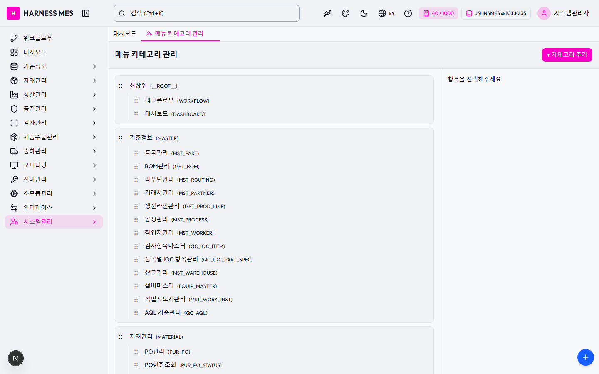

Route: /system/menu-categories
Status: PASS / HTTP 200
| 기능/버튼 | 처리 방식 | 상태 | 비고 |
|---|---|---|---|
| 화면 로드 | GET /system/menu-categories | 실행 | HTTP 200 |
| 라우트 prewarm | 직접 HTTP 확인 | 실행 | HTTP 200, 141ms |
| 초기 API 호출 | 브라우저 네트워크 수집 | 실행 | 12건 |
| 🇰🇷 | 화면 버튼 목록화 | 목록화 | 후속 메뉴별 세부 시나리오 실행 대상 |
| 시스템관리자 | 화면 버튼 목록화 | 목록화 | 후속 메뉴별 세부 시나리오 실행 대상 |
| 워크플로우 | 화면 버튼 목록화 | 목록화 | 후속 메뉴별 세부 시나리오 실행 대상 |
| 대시보드 | 화면 버튼 목록화 | 목록화 | 후속 메뉴별 세부 시나리오 실행 대상 |
| 기준정보 | 화면 버튼 목록화 | 목록화 | 후속 메뉴별 세부 시나리오 실행 대상 |
| 자재관리 | 화면 버튼 목록화 | 목록화 | 후속 메뉴별 세부 시나리오 실행 대상 |
| 생산관리 | 화면 버튼 목록화 | 목록화 | 후속 메뉴별 세부 시나리오 실행 대상 |
| 품질관리 | 화면 버튼 목록화 | 목록화 | 후속 메뉴별 세부 시나리오 실행 대상 |
| 검사관리 | 화면 버튼 목록화 | 목록화 | 후속 메뉴별 세부 시나리오 실행 대상 |
| 제품수불관리 | 화면 버튼 목록화 | 목록화 | 후속 메뉴별 세부 시나리오 실행 대상 |
| 출하관리 | 화면 버튼 목록화 | 목록화 | 후속 메뉴별 세부 시나리오 실행 대상 |
| 모니터링 | 화면 버튼 목록화 | 목록화 | 후속 메뉴별 세부 시나리오 실행 대상 |
| 설비관리 | 화면 버튼 목록화 | 목록화 | 후속 메뉴별 세부 시나리오 실행 대상 |
| 소모품관리 | 화면 버튼 목록화 | 목록화 | 후속 메뉴별 세부 시나리오 실행 대상 |
| 인터페이스 | 화면 버튼 목록화 | 목록화 | 후속 메뉴별 세부 시나리오 실행 대상 |
| 시스템관리 | 화면 버튼 목록화 | 목록화 | 후속 메뉴별 세부 시나리오 실행 대상 |
| 메뉴 카테고리 관리 | 화면 버튼 목록화 | 목록화 | 후속 메뉴별 세부 시나리오 실행 대상 |
| + 카테고리 추가 | 화면 버튼 목록화 | 목록화 | 후속 메뉴별 세부 시나리오 실행 대상 |
| ⋮⋮ | 화면 버튼 목록화 | 목록화 | 후속 메뉴별 세부 시나리오 실행 대상 |
| 최상위(__ROOT__) | 화면 버튼 목록화 | 목록화 | 후속 메뉴별 세부 시나리오 실행 대상 |
| 워크플로우(WORKFLOW) | 화면 버튼 목록화 | 목록화 | 후속 메뉴별 세부 시나리오 실행 대상 |
| 대시보드(DASHBOARD) | 화면 버튼 목록화 | 목록화 | 후속 메뉴별 세부 시나리오 실행 대상 |
| 기준정보(MASTER) | 화면 버튼 목록화 | 목록화 | 후속 메뉴별 세부 시나리오 실행 대상 |
| 품목관리(MST_PART) | 화면 버튼 목록화 | 목록화 | 후속 메뉴별 세부 시나리오 실행 대상 |
| BOM관리(MST_BOM) | 화면 버튼 목록화 | 목록화 | 후속 메뉴별 세부 시나리오 실행 대상 |
| 라우팅관리(MST_ROUTING) | 화면 버튼 목록화 | 목록화 | 후속 메뉴별 세부 시나리오 실행 대상 |
| 거래처관리(MST_PARTNER) | 화면 버튼 목록화 | 목록화 | 후속 메뉴별 세부 시나리오 실행 대상 |
| 생산라인관리(MST_PROD_LINE) | 화면 버튼 목록화 | 목록화 | 후속 메뉴별 세부 시나리오 실행 대상 |
| 공정관리(MST_PROCESS) | 화면 버튼 목록화 | 목록화 | 후속 메뉴별 세부 시나리오 실행 대상 |
| 작업자관리(MST_WORKER) | 화면 버튼 목록화 | 목록화 | 후속 메뉴별 세부 시나리오 실행 대상 |
| 검사항목마스터(QC_IQC_ITEM) | 화면 버튼 목록화 | 목록화 | 후속 메뉴별 세부 시나리오 실행 대상 |
| 품목별 IQC 항목관리(QC_IQC_PART_SPEC) | 화면 버튼 목록화 | 목록화 | 후속 메뉴별 세부 시나리오 실행 대상 |
| 창고관리(MST_WAREHOUSE) | 화면 버튼 목록화 | 목록화 | 후속 메뉴별 세부 시나리오 실행 대상 |
| 설비마스터(EQUIP_MASTER) | 화면 버튼 목록화 | 목록화 | 후속 메뉴별 세부 시나리오 실행 대상 |
| 작업지도서관리(MST_WORK_INST) | 화면 버튼 목록화 | 목록화 | 후속 메뉴별 세부 시나리오 실행 대상 |
| AQL 기준관리(QC_AQL) | 화면 버튼 목록화 | 목록화 | 후속 메뉴별 세부 시나리오 실행 대상 |
| 자재관리(MATERIAL) | 화면 버튼 목록화 | 목록화 | 후속 메뉴별 세부 시나리오 실행 대상 |
| PO관리(PUR_PO) | 화면 버튼 목록화 | 목록화 | 후속 메뉴별 세부 시나리오 실행 대상 |
| PO현황조회(PUR_PO_STATUS) | 화면 버튼 목록화 | 목록화 | 후속 메뉴별 세부 시나리오 실행 대상 |
| 입하관리(MAT_ARRIVAL) | 화면 버튼 목록화 | 목록화 | 후속 메뉴별 세부 시나리오 실행 대상 |
| 입하실적조회(MAT_ARRIVAL_RESULT) | 화면 버튼 목록화 | 목록화 | 후속 메뉴별 세부 시나리오 실행 대상 |
| 입하수불조회(MAT_ARRIVAL_TRANSACTION) | 화면 버튼 목록화 | 목록화 | 후속 메뉴별 세부 시나리오 실행 대상 |
| 특채처리(QC_CONCESSION) | 화면 버튼 목록화 | 목록화 | 후속 메뉴별 세부 시나리오 실행 대상 |
| 자재입고관리(MAT_RECEIVE) | 화면 버튼 목록화 | 목록화 | 후속 메뉴별 세부 시나리오 실행 대상 |
| 입고이력조회(MAT_RECEIVE_HISTORY) | 화면 버튼 목록화 | 목록화 | 후속 메뉴별 세부 시나리오 실행 대상 |
| 출고요청관리(MAT_REQUEST) | 화면 버튼 목록화 | 목록화 | 후속 메뉴별 세부 시나리오 실행 대상 |
| 자재출고관리(MAT_ISSUE) | 화면 버튼 목록화 | 목록화 | 후속 메뉴별 세부 시나리오 실행 대상 |
| 입력 필드 | DOM 수집 | 목록화 | 1개 |
| 선택 필드 | DOM 수집 | 목록화 | 25개 |
| Method | URL | Status | OK |
|---|---|---|---|
| GET | /api/health | 200 | OK |
| GET | /api/db-info | 200 | OK |
| GET | /api/health | 200 | OK |
| GET | /api/db-info | 200 | OK |
| GET | /api/auth/me | 200 | OK |
| GET | /api/system/comm-configs?commType=SERIAL&useYn=Y | 200 | OK |
| GET | /api/system/configs/active | 200 | OK |
| GET | /api/menu-categories/tree | 200 | OK |
| GET | /api/menu-categories/tree | 200 | OK |
| GET | /api/menu-categories/unassigned-menus | 200 | OK |
| GET | /api/master/com-codes/all-active | 200 | OK |
| GET | /api/menu-categories/tree | 200 | OK |
requestfailed: GET /api/db-info net::ERR_ABORTED requestfailed: GET https://fonts.gstatic.com/s/outfit/v15/QGYvz_MVcBeNP4NJtEtq.woff2 net::ERR_ABORTED

H HARNESS MES 🇰🇷 40 / 1000 JSHNSMES @ 10.1.10.35 시스템관리자 워크플로우 대시보드 기준정보 자재관리 생산관리 품질관리 검사관리 제품수불관리 출하관리 모니터링 설비관리 소모품관리 인터페이스 시스템관리 대시보드 메뉴 카테고리 관리 메뉴 카테고리 관리 + 카테고리 추가 ⋮⋮ 최상위(__ROOT__) ⋮⋮ 워크플로우(WORKFLOW) ⋮⋮ 대시보드(DASHBOARD) ⋮⋮ 기준정보(MASTER) ⋮⋮ 품목관리(MST_PART) ⋮⋮ BOM관리(MST_BOM) ⋮⋮ 라우팅관리(MST_ROUTING) ⋮⋮ 거래처관리(MST_PARTNER) ⋮⋮ 생산라인관리(MST_PROD_LINE) ⋮⋮ 공정관리(MST_PROCESS) ⋮⋮ 작업자관리(MST_WORKER) ⋮⋮ 검사항목마스터(QC_IQC_ITEM) ⋮⋮ 품목별 IQC 항목관리(QC_IQC_PART_SPEC) ⋮⋮ 창고관리(MST_WAREHOUSE) ⋮⋮ 설비마스터(EQUIP_MASTER) ⋮⋮ 작업지도서관리(MST_WORK_INST) ⋮⋮ AQL 기준관리(QC_AQL) ⋮⋮ 자재관리(MATERIAL) ⋮⋮ PO관리(PUR_PO) ⋮⋮ PO현황조회(PUR_PO_STATUS) ⋮⋮ 입하관리(MAT_ARRIVAL) ⋮⋮ 입하실적조회(MAT_ARRIVAL_RESULT) ⋮⋮ 입하수불조회(MAT_ARRIVAL_TRANSACTION) ⋮⋮ 특채처리(QC_CONCESSION) ⋮⋮ 자재입고관리(MAT_RECEIVE) ⋮⋮ 입고이력조회(MAT_RECEIVE_HISTORY) ⋮⋮ 출고요청관리(MAT_REQUEST) ⋮⋮ 자재출고관리(MAT_ISSUE) ⋮⋮ 기타출고관리(MAT_ISSUE_OTHER) ⋮⋮ 자재분할관리(MAT_LOT_SPLIT) ⋮⋮ 자재병합관리(MAT_LOT_MERGE) ⋮⋮ 자재폐기처리(MAT_SCRAP) ⋮⋮ 재고보정처리(MAT_ADJUSTMENT) ⋮⋮ 기타입고관리(MAT_MISC_RECEIPT) ⋮⋮ 자재입고취소(MAT_RECEIPT_CANCEL) ⋮⋮ 자재재고현황조회(INV_MAT_STOCK) ⋮⋮ 자재수불이력조회(INV_TRANSACTION) ⋮⋮ 자재재고실사관리(INV_MAT_PHYSICAL_INV) ⋮⋮ 자재재고실사반영(INV_MAT_PHYSICAL_INV_APPLY) ⋮⋮ 자재재고실사조회(INV_MAT_PHYSICAL_INV_HISTORY) ⋮⋮ 입하재고현황조회(INV_ARRIVAL_STOCK) ⋮⋮ 자재재고홀드관